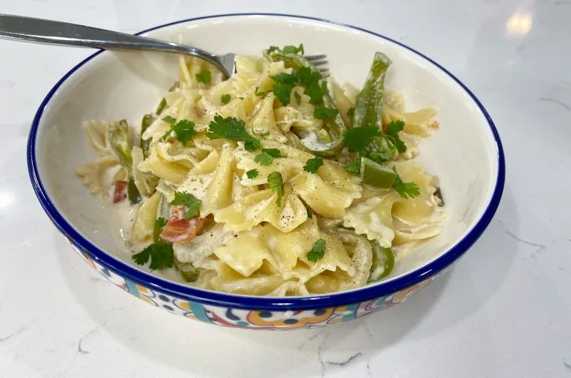

Home
Fajita Pasta

Description
This is a dish that I am trying this evening. It is a meatless fajita dish. I am not sure how I feel about that, 😅, but I will post an update afterwards.
Ingredients
- 12 oz bow tie pasta
- 1 tbsp olive oil
- 8 oz heavy cream
- 1 yellow onion
- 1 green bell pepper, sliced
- 1 tsp onion powder
- 1 tsp garlic powder
- 1 tsp paprika
- 1 tsp pepper
- 10 oz can diced tomatoes with green chiles, like Rotel
- 1 can of diced chiles, if unable to find tomatoes with green chiles
- 1/3 cup Parmesan cheese, optional
Steps
- To a large pot of boiling water add the pasta and cook according to the box instructions. Reserve one cup of the pasta water, and drain remaining water. Set pasta and pasta water aside.
- To a large skillet over medium heat, add the oil. Once hot, add in the onion and pepper. Sauté for 5-8 minutes or until the veggies are tender. Stir in the heavy cream and seasonings and heat to a simmer. Let simmer for one minute and add in the diced tomatoes and green chiles, then whisk in the reserved water. Once well combined, stir in the cooked pasta and Parmesan cheese. Enjoy.